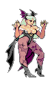
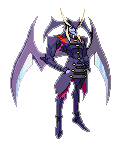
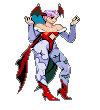

Morrigan Aesland

| Birth Year |
1678 |
| Origin |
Escocioa |
| Race |
Sucubo |
Morrigan was a very special Succubus, even within all of the Darkstalkers. She was born as an S Class noble. But at that time, roughly 300 years ago, a struggle for power had already started.
Various battles had occurred in various locations. It was unacceptable for a Succubus child to be given rights to power at the time. The problems didn't end there either. Morrigan had no way to control the enormous powers that she held within.
If she were to be left alone, she would destroy herself and the land around her.
Jedah

| Birth year |
4045 BC |
| Origin |
Makai |
| Race |
Demon |
Jedah is a sinister person with the desire to control others, he can often come across as a relaxed, collected and intelligent supernatural being.
He has a degree of arrogance in his skills when it comes to a human and enjoys tormenting them, as he is the one who sent out his group of Darkstalkers to attack Hsien-Ko's loved ones for his own amusement.
He is focused in achieving his goal of controlling Makai and humanity from a destiny seen by the former king of Makai.
Lilith

| Birth year |
Unknow |
| Origin |
Makai |
| Race |
Sucubus |
Morrigan had no way to control the enormous powers that she held within. If she were to be left alone, she would destroy herself and the land around her. Belial decided to split her powers and isolate them to protect her.
Morrigan's soul was split into two; one half being closed off into a space that Belial had created.